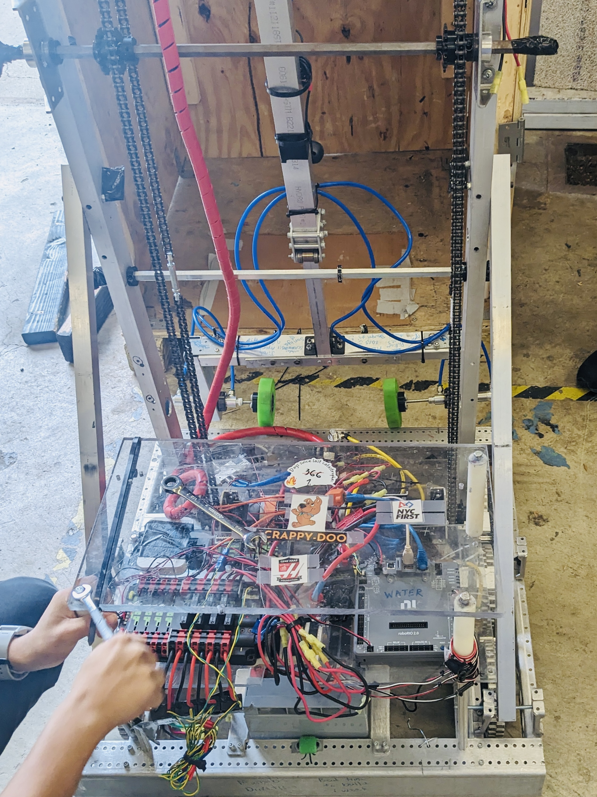

October 2021 – June 2024
Skills used: Java, Git, Raspberry Pi, Soldering
As the director of the electrical and control department of FRC Team 5123, I networked a complete CAN bus-based wiring and controller system and wrote Java code based on the command and subsystem framework. I also worked on integrating visual odometry and pose estimation with a Raspberry Pi running PhotonVision to achieve autonomous driving. We were able to win the FRC NYC Regional Championship in 2023 and advance to the World Championship.
